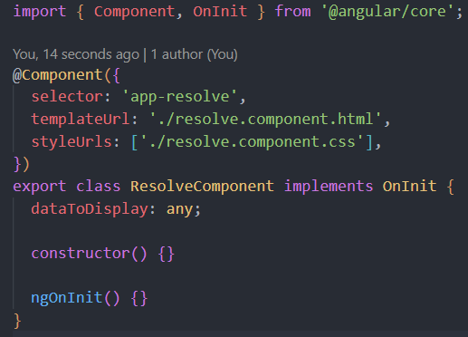
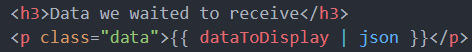
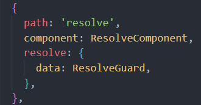

Did you notice it took a couple of seconds to load this page?
The resolve guard ensures that a page is not loaded before its data
Steps
Creating our resolve guard (resolve.guard.ts)
Here, we first generate a guard (or service) called resolve, you can
name it whatever you'd like
We then implement the 'Resolve' interface
We then must implement the Resolve interface's method 'resolve()'
We would typically inject another service, that handles our HTTP
requests in the constructor. For simplicity, here we are simply
completing the HTTP request within the resolve() method directly
To mimic a large payload of data that we must wait to receive, I am
using rxjs's delay method to withhold execution for 2 seconds (2000ms)
Next, we need to create our component that will be using this data to
display in the UI
Roughly set the component up, we will need to return to add more after
modifying our app-routing.module.ts


Modifying our app-routing.module.ts
Head to the app-routing.module.ts file
Add a path to the view component you just created
Add the key 'resolve' with a value that is an object containing a key
(here we call it 'data' but you may call it whatever you'd like), and a
value of the guard or service that implements the Resolve interface
(here we are using the ResolveGuard that we created in the first step)
This variable, 'data', will hold what is returned by the resolve()
method in our ResolveGuard, in this case, we are returning an observable
with our http request

Heading back to our view component (resolve.component.ts +
resolve.component.html)
Back in our resolve component, we want to use/render this data in the
template
We first use the constructor to inject the ActivatedRoute, this is how
we will access that variable 'data' from the routing module
Remember that this variable 'data' holds an observable from the http
request returned in the resolve() method of our ResolveGuard
We set our variable to display in the template equal to the
activatedRoute.data
Since we are working with json, we use the json pipe in our template
All finished! Now play around with implementing a loading spinner or
progress bar to improve user experience!